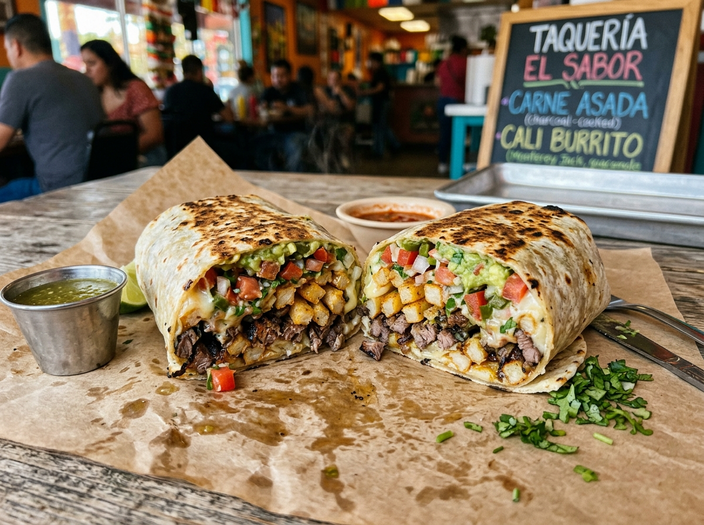

1. Dried Chili Triad
Ancho, Mulato, & Pasilla chilis toasted on comal, deseeded, & rehydrated in hot stock for deep earthiness.
Mole Poblano is widely celebrated as the crown jewel of Mexican gastronomy. At La Poblanita Mexican Restaurant, we prepare our signature mole using an authentic 20-ingredient family recipe passed down through generations in Puebla, Mexico.

Ancho, Mulato, & Pasilla chilis toasted on comal, deseeded, & rehydrated in hot stock for deep earthiness.
Pure Mexican Ibarra dark chocolate blended with roasted pumpkin seeds, raisins, cinnamon, & cloves.
Simmered slowly in heavy pots until rich, glossy, & velvety—balanced perfectly between sweet, spicy, & savory.